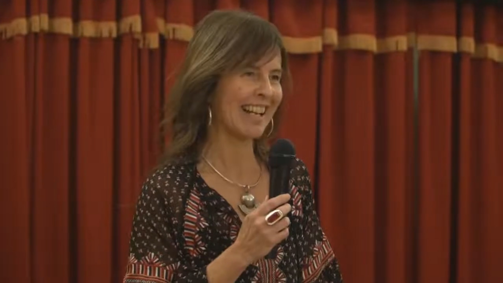

Con una extraordinaria simpleza y claridad, nos brindó una impecable exposición acerca de la influencia del pensamiento jesuita a lo largo de los siglos, aportándonos un marco ideal para interpretar cabalmente su significado. En ese marco pudimos visualizar claramente una perspectiva que nos ayudó a comprender como, desde una visión humanista, el mundo de las ideas jesuitas mantuvo una vigencia y una proyección espacio temporal como pocas veces hemos visto.
La orden, propuso y desarrolló desde una concepción universal, un proceso evangelizador que respetó las identidades y las costumbres locales y regionales. En este contexto y en condiciones no del todo favorables, fue Duarte y Quirós quien vislumbró que uno de los objetivos centrales del pensamiento pasaba por el acompañamiento y el desarrollo de esta dimensión humanista de libertad y de trascendencia.
Ver la conferencia completa
▶ Ver en YouTube →Los monserratenses tratamos de honrar ese legado apelando a todos quienes puedan brindarnos un enfoque para reflexionar acerca de este espíritu que persigue la libertad como principio indisoluble de la condición humana.
Gracias Inés por tu generosidad para compartir con nosotros esta perspectiva que nos amplió el horizonte y nos ayudó a comprender mejor los procesos históricos y su influencia en la actualidad.
El cierre no pudo ser mejor. La Cantoría de la Merced dirigida con la maestría de Santiago Ruiz nos deleitó con un repertorio exquisito que conmovió al público. Final con la gente encendida disfrutando de una noche que no olvidaremos fácilmente.